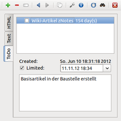
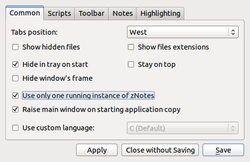

zNotes
Dieser Artikel wurde für die folgenden Ubuntu-Versionen getestet:
Ubuntu 16.04 Xenial Xerus
Ubuntu 14.04 Trusty Tahr
Zum Verständnis dieses Artikels sind folgende Seiten hilfreich:
zNotes  ist ein einfach gestaltetes kleines Programm zum Sammeln von Textnotizen. Es ist als Alternative zum (nicht funktionierenden) Notiz-Applet von Xfce entstanden und kann auch als einfache ToDo-Liste verwendet werden. Praktisch ist die Gliederung der Notizen in Reitern (Tabs). Durch die Verwendung der Grafikbibliothek Qt kann es plattformübergreifend eingesetzt werden.
ist ein einfach gestaltetes kleines Programm zum Sammeln von Textnotizen. Es ist als Alternative zum (nicht funktionierenden) Notiz-Applet von Xfce entstanden und kann auch als einfache ToDo-Liste verwendet werden. Praktisch ist die Gliederung der Notizen in Reitern (Tabs). Durch die Verwendung der Grafikbibliothek Qt kann es plattformübergreifend eingesetzt werden.
Die Programmoberfläche ist auf Englisch, was in der Praxis aber keine allzu große Hürde darstellen sollte. Eine deutsche Übersetzung ist ab der noch nicht veröffentlichten Version 0.4.6 vorhanden, während man bei der Version 0.4.5 selbst Hand anlegen muss (siehe Problembehebung). Ähnliche Programme listet der Artikel Notizen auf.
Installation¶
 zNotes ist nicht in den offiziellen Paketquellen enthalten. Man muss daher auf ein Fremdpaket ausweichen.
zNotes ist nicht in den offiziellen Paketquellen enthalten. Man muss daher auf ein Fremdpaket ausweichen.
Fremdpaket¶
Über die Projektseite kann man ein Fremdpaket  im .deb-Format herunterladen und manuell installieren [1].
im .deb-Format herunterladen und manuell installieren [1].
Hinweis!
Fremdpakete können das System gefährden.
Anmerkung: Bitte das Paket mit ...-ubuntu_...deb im Namen verwenden.
Verwendung¶
|  |
| Beispiel ToDo-Liste |
Bei Ubuntu-Varianten mit einem Anwendungsmenü kann das Programm über den Eintrag "Zubehör -> zNotes" gestartet [2] werden. Ansonsten verwendet man den Programmnamen.
Notizen werden in zNotes über Reiter (Tabs) organisiert. Dabei kann man frei entscheiden, ob die Reiter oben, unten, links oder rechts im Anwendungsfenster erscheinen sollen. Das gleiche gilt für die Symbolleiste.
Neue Einträge müssen einer von drei Kategorien zugeordnet werden:
einfache Textnotiz
Notiz im HTML-Format (inkl. Formatierungen)
ToDo-Liste (Aufgaben mit Termin)
Dahinter stecken jeweils drei Dateien bzw. Dateiformate, die in der Voreinstellung im Ordner ~/.local/share/notes/ im Homeverzeichnis gespeichert werden. Der Dateiname entspricht dem Reiternamen, aber die Endung wird nicht angezeigt:
Zur Benutzung des Programms ist das zwar nicht weiter relevant, erleichtert aber die spätere Übernahme vorhandener Notizen in andere Programme.
Formatierung¶
Nur bei Notizen im HTML-Format kann der Text (in Grenzen) formatiert werden. Zur Auswahl stehen fett, kursiv, unterstrichen und durchgestrichen. Diese Formatierungen stehen über Tastenkürzel zur Verfügung. Zusätzlich kann die Textfarbe angepasst werden.
Man kann die Symbolleiste auch um entsprechende Schaltflächen ergänzen (siehe nächster Abschnitt), wenn es Probleme mit den Tastenkürzeln gibt.
Einstellungen¶
|  |
| Einstellungen |
Die Programmeinstellungen sind über das Symbol in der Symbolleiste oben erreichbar. Sie verteilen sich auf mehrere Reiter (siehe Abbildung):
"Common" – allgemeine Einstellungen
"Scripts" – externe Anwendungen einbinden
"Toolbar" – auf der Symbolleiste sichtbare Funktionen
"Notes" – Schriftart, Speicherort, u.a.
"Highlighting" – Text-Hervorhebung (z.B. für URLs)
Alle Einstellungen werden in der Datei ~/.config/pDev/zNotes.conf im Homeverzeichnis gespeichert.
Autostart¶
Um das Programm automatisch nach der Anmeldung auszuführen, erstellt man einen Autostart-Eintrag. Zusätzlich kann es sinnvoll sein, in den Einstellungen die Option "Hide in tray on start" zu aktivieren. Diese Option sorgt auch dafür, dass die Sichtbarkeit des Programmfensters (anzeigen oder verbergen) mit Linksklick  und die Programmfunktionen via Rechtsklick
und die Programmfunktionen via Rechtsklick  über ein Symbol im Panel (Benachrichtigungsfeld) gesteuert werden können.
über ein Symbol im Panel (Benachrichtigungsfeld) gesteuert werden können.
Tastenkürzel¶
Nicht alle Tastenkürzel funktionieren wie angegeben – erfolgreich getestete sind mit "(ok)" markiert.
| Tastenkürzel | |
| Tasten(n) | Funktion |
| Alt + 1 ... Alt + 9 | Gehe zu Notiz 1 ... 9 (ok) |
| Alt + ← | Vorherige Notiz (ok) |
| Alt + → | Nächste Notiz (ok) |
| Strg + N | Neuen Reiter bzw. Notiz hinzufügen (ok) |
| Strg + W | Aktiven Reiter bzw. Notiz löschen |
| F2 | Reiternamen ändern (ok) |
| Strg + F | Suche (ok) |
| Strg + B | fetter Text |
| Strg + I | kursiver Text |
| Strg + S | |
| Strg + U | unterstrichener Text |
| Strg + Z | Rückgängig (ok) |
| Strg + Q | Anwendung beenden |
Problembehebung¶
Lokalisierung¶
Wer eine deutsche Programmoberfläche bevorzugt, lädt die Datei znotes_de.qm herunter und kopiert diese mit Root-Rechten nach /usr/share/znotes/translations/ (aufgrund eines Fehlers der Portalsoftware Inyoka muss die Datei noch umbenannt werden):
mv znotes_de.obj znotes_de.qm sudo mkdir -p /usr/share/znotes/translations/ sudo cp znotes_de.qm /usr/share/znotes/translations/
Über SourceForge sind einige weitere Sprachdateien verfügbar. Die znotes_xx.qm-Dateien (xx steht für das Landeskürzel) müssen mit Root-Rechten [3] in einen der folgenden Ordner kopiert und zNotes anschließend neu gestartet werden:
zNotes-Ordner (usr/bin/)
zNotes-Ordner/translations (usr/bin/translations/)
/usr/share/znotes/translations/ (unter Linux empfehlenswert, Ordner muss zuerst erstellt werden)
Links¶
ZNotes is a Simple Note Taking Application for Linux
- Blogbeitrag 01/2011Notizen
 Übersichtsartikel
Übersichtsartikel
- Erstellt mit Inyoka
-
 2004 – 2017 ubuntuusers.de • Einige Rechte vorbehalten
2004 – 2017 ubuntuusers.de • Einige Rechte vorbehalten
Lizenz • Kontakt • Datenschutz • Impressum • Serverstatus -
Serverhousing gespendet von